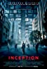

| (Links) | Ranking | Nombre de Película | Año de Estreno | Tiempo de Duración | Director | Puntaje |
 |
1 | The Shawshank Redemption | 1994 | 142 min | Frank Darabont | 9.3 |
 |
2 | The Godfather | 1972 | 175 min | Francis Ford Coppola | 9.2 |
 |
3 | The Dark Knight | 2008 | 152 min | Christopher Nolan | 9.0 |
 |
4 | The Godfather: Part II | 1974 | 202 min | Francis Ford Coppola | 9.0 |
 |
5 | 12 Angry Men | 1957 | 96 min | Sidney Lumet | 9.0 |
 |
6 | The Lord of the Rings: The Return of the King | 2003 | 201 min | Peter Jackson | 8.9 |
 |
7 | Pulp Fiction | 1994 | 154 min | Quentin Tarantino | 8.9 |
 |
8 | Schindler's List | 1993 | 195 min | Steven Spielberg | 8.9 |
|  | 9 | Inception | 2010 | 148 min | Christopher Nolan | 8.8 |
 |
10 | Fight Club | 1999 | 139 min | David Fincher | 8.8 |